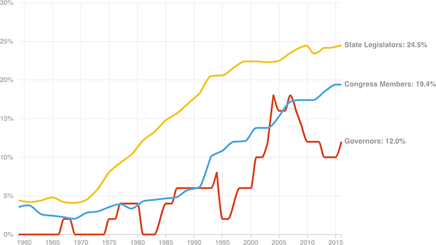

Women In Congress, State Legislatures, And Governors’ Mansions
The share of women in state and national political offices has grown over the years, but remains far below representative of the nation as a whole (women make up 50.8 percent of the U.S. population).
